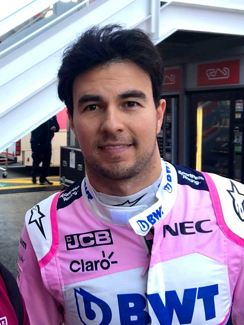

Sergio Michel Pérez Mendoza (Guadalajara, Jalisco, México; 26 de enero de 1990), también conocido como Checo Pérez, es un piloto de automovilismo mexicano. Actualmente es miembro de la Escudería Telmex. Desde 2021 es piloto de Red Bull en Fórmula 1, resultando tercero en 2022.Comenzó su carrera en 2004; en la Fórmula 3 Británica fue campeón de clase nacional en 2007. En 2009 debutó en la GP2 Series y al año siguiente fue subcampeón.
Es el piloto mexicano más exitoso de la historia de Fórmula 1 con:
La trayecotoria profesional de Sergio Pérez ha trascendido diversas escuderías en la F1.